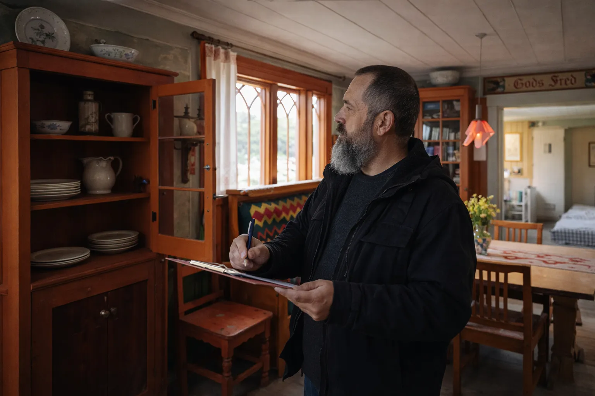
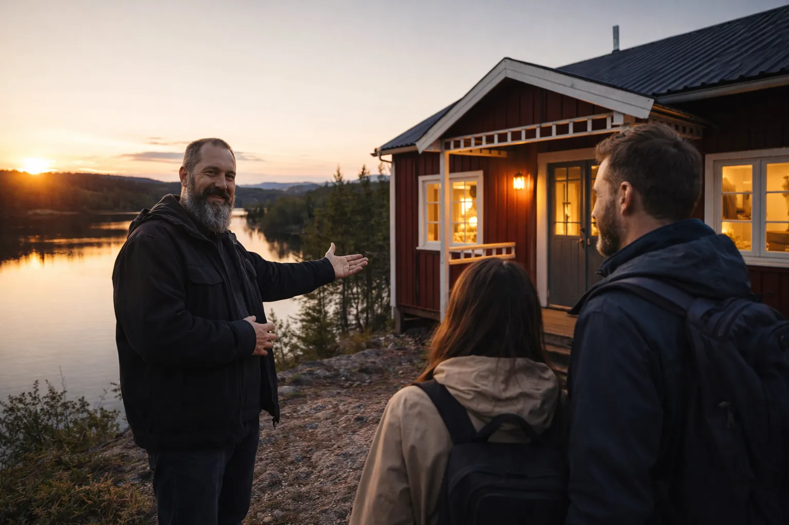

Vakantiehuisbeheer in de Praktijk




Zorgeloos beheer op afstand: controle, onderhoud, schoonmaak, storingen en verhuurondersteuning.
Heb je een vakantiehuis in Värmland en ben je niet altijd zelf in Zweden? Dan houd ik je woning voor je in de gaten met periodieke controles, duidelijke terugkoppeling en praktische verhuurmanagement-ondersteuning.
In de winter zorg ik dat het huis veilig blijft: kachel of basisverwarming op tijd aan, controle op vorstrisico en praktische acties om schade te voorkomen.
Ook bij afwezigheid of juist tijdens je verblijf kan ik storingen snel oplossen en, waar nodig, aanpassingen, reparaties en renovatiewerk uitvoeren aan het huis. Daarnaast kan ik het verhuurmanagement begeleiden, zoals voorbereiding van verblijven, schoonmaak, afstemming met gasten en opvolging na vertrek.
Wanneer het huis verhuurd wordt, kan ik gasten tijdens de huurperiode ondersteunen en begeleiden. Denk aan coördinatie van schoonmaak, snelle hulp bij storingen en praktische ondersteuning op locatie, zodat het verblijf voor je gasten zo aangenaam mogelijk verloopt.
Ondersteuning voor vakantieverhuur via:
Indicatieve tarieven:
Je krijgt één vast aanspreekpunt in Värmland dat snel kan schakelen. Ik stuur foto’s, video’s en korte updates, zodat je op afstand weet wat de status is, welke acties zijn uitgevoerd en hoe het verhuurmanagement verloopt.
Zo blijft je huis in goede conditie, ook wanneer je er zelf niet bent.


Wil je bespreken hoe vaak controles nodig zijn en wat voor jouw woning de slimste aanpak is? Stuur me je locatie, type woning en wensen. Dan maak ik een praktische opzet op maat.